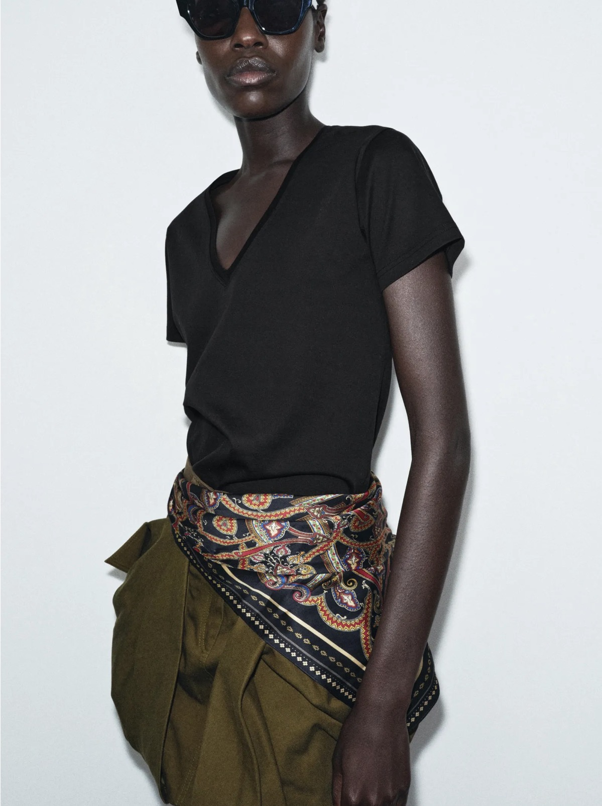
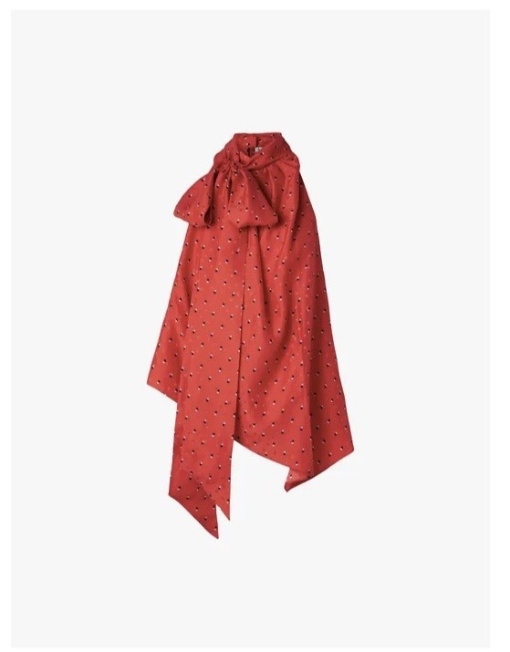
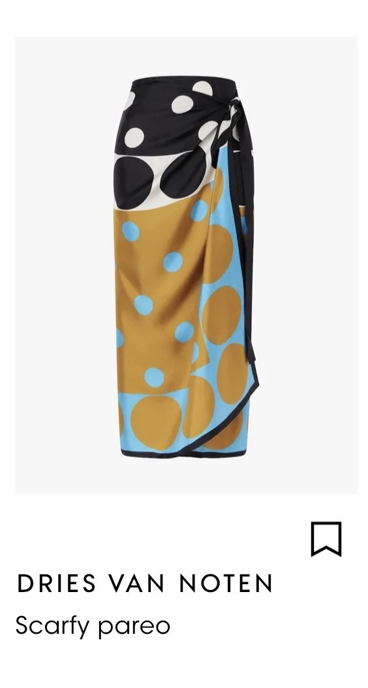
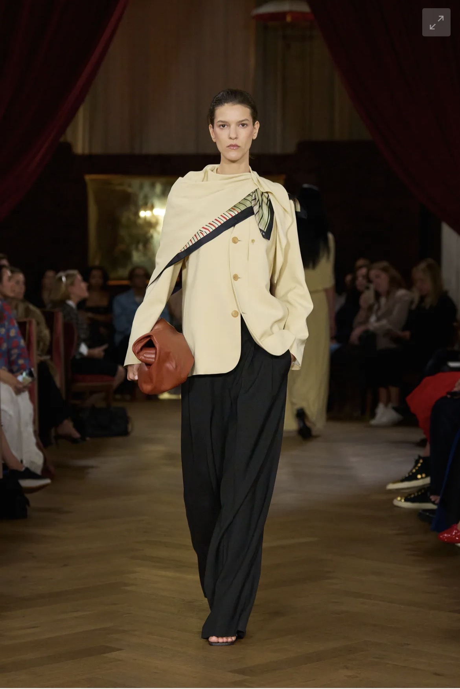
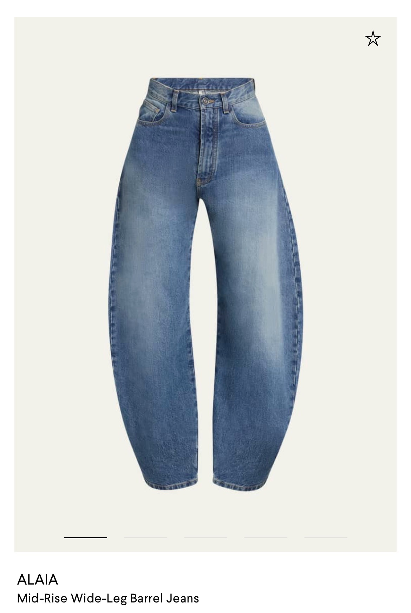
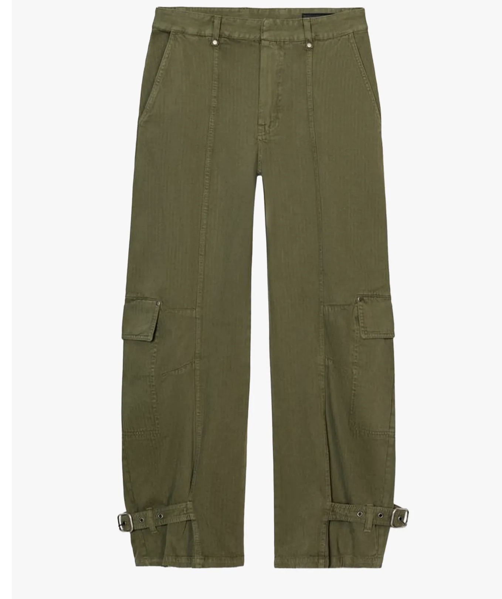
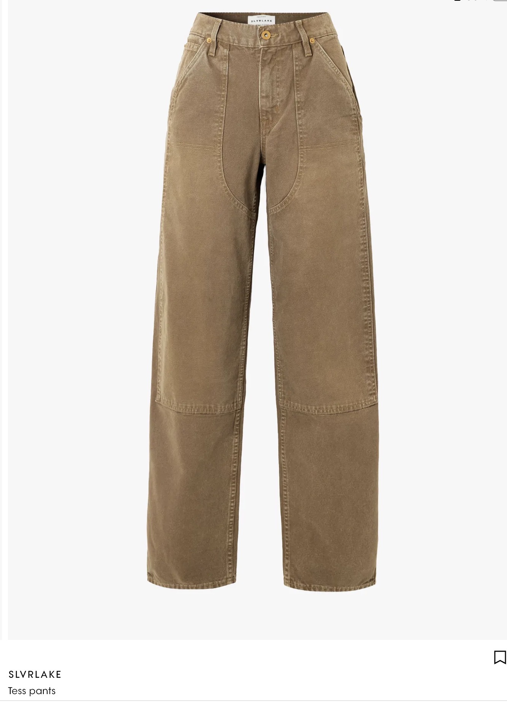
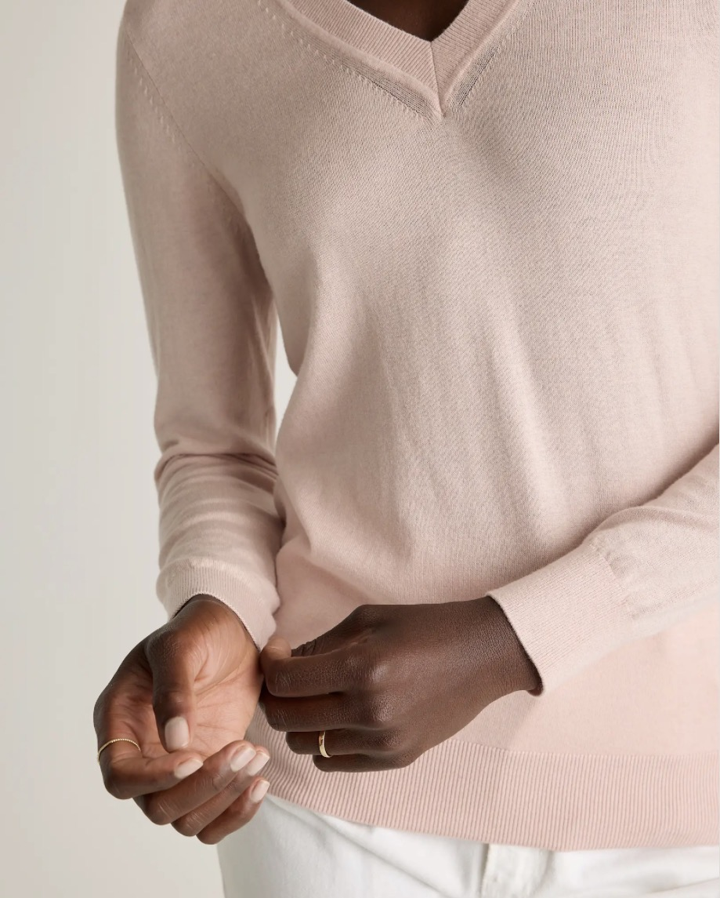
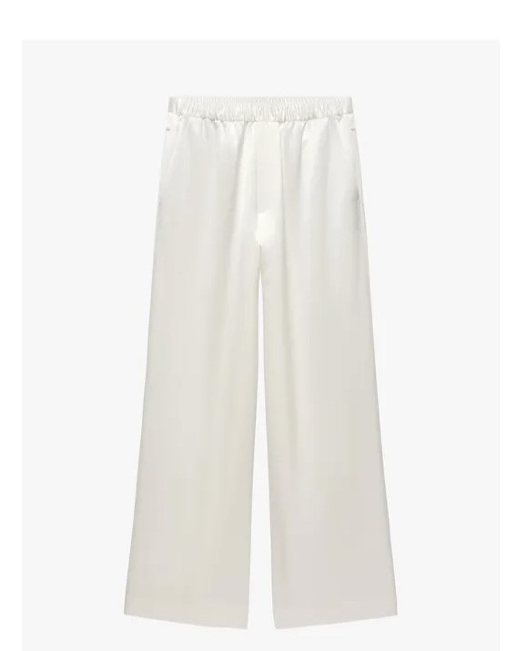
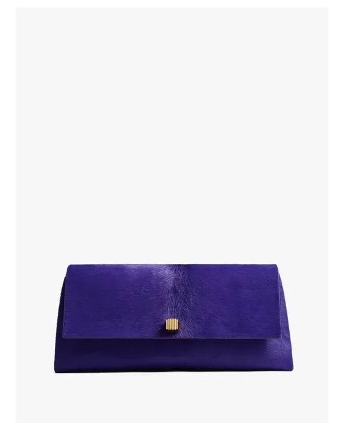

In Chicago, that idea resonates. Our version of spring is unpredictable at best—a glorious, warm, sunny day followed by a week of freezing temperatures. The desire to dress for the season is there, but the reality rarely aligns.
Across the board, the season is leaning softer. There’s an ease to tailoring, a continued interest in fluidity, and a return to pieces that feel considered rather than overtly “trendy.” Color is gentle—pale pinks, light neutrals—and fabrics follow suit, with cashmere and silk working their way into everyday dressing. Even evening-leaning pieces, like satin, are finding their place during the day when styled with something more casual.
Still, if there’s one idea that defines spring right now, it’s scarf dressing.

Scarves are doing more than finishing a look—they are the look. Wrapped at the neck, tied at the head, layered over shoulders, or woven into an outfit entirely, they offer both function and intention. Silk, in particular, carries warmth while introducing a lighter, more seasonal touch.


Unlike many trends, this one transitions effortlessly into summer—and unlike many trends, it invites personal interpretation. There is no single right way to wear a scarf.
Layering, of course, remains essential—but this season it feels more deliberate. It’s less about piling on and more about composition: lightweight pieces working together, scarves included, to create dimension without bulk. The goal is flexibility—being able to adjust as the weather inevitably shifts again.

And then there are barrel jeans.

What felt like an oddity last year has returned with surprising conviction. In a 30-year career, it’s rare to see a silhouette that wasn’t universally flattering come back stronger—but here we are. This time, the shape is more refined: slightly slimmer, more controlled, and ultimately more wearable.


Beyond those key ideas, there are a few pieces worth noting. Pink shirting continues—if you invested last year, you’re still very much on point; if not, now is the time. Cashmere remains a quiet constant, grounding lighter looks in something practical.

Satin pants, paired with something casual, offer an easy way into daytime polish.

And while a clutch is undeniably chic, it comes with a certain level of commitment—best reserved for moments when you don’t need your hands entirely free.

Spring, it seems, isn’t asking for a full reset. Just a more thoughtful approach.